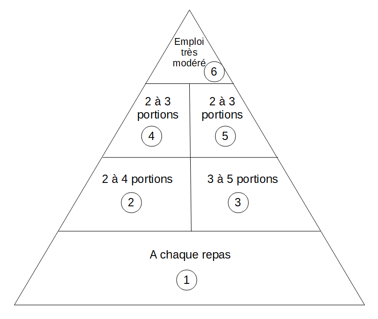

<div class="container">
   <div id="page1">
      <div  >
         <h1>La pyramide des aliments</h1>

         <h2> Pour bien commencer : </h2>
         <p>
            Maintenant, tu sais soigner, tu sais prévenir en cas de soucis mais bien s’alimenter permet d’éviter
            certains problèmes de santé.</br>
            Aussi, il est important de savoir quoi manger et en quelle quantité pour être en bonne santé. </br>
         </p>
         <p>
            Observe bien cette pyramide.</br>
            Il va falloir que tu trouve la place de chaque classe d’aliment.</br>
            Ainsi, à la fin, tu seras capables de conseiller Astérix et Obélix sur la composition de leurs repas.</br>
         </p>
         <br />

         <h2> Déroulement : </h2>

         <p>Associe la bonne classe d’aliment au bon numéro dans la pyramide</br></p>
         <p>Les différentes classes d'aliment:</p>
         <ul>
            <li>Légumes</li>
            <li>Fruits</li>
            <li>Céréales</li>
            <li>Graisse, huiles et sucrés</li>
            <li>Produits laitiers</li>
         </ul>

         </br>
      </div>
   </div>
</div>